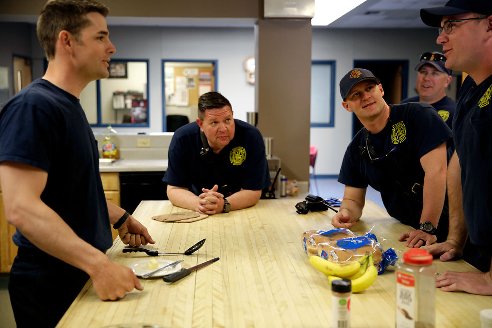

Craig Plassmeyer sits on firetruck Quint 9 on April 19 in Columbia. Downtime like this can sometimes be few and far between during firefighting shifts. The firefighters have 24 hour shifts where they’re at the station away from family. Plassmeyer has a wife and a daughter and he said it can be hard being away from them for so long — he spends almost a third of each month at the firehouse.
Craig Plassmeyer, 32
Craig Plassmeyer only lives in Columbia about 11 days a month, but he cares deeply about the community. For those 11 days, he’s on call and working 24 hours straight — that’s 264 hours a month. Underlying all that work is one simple philosophy:
“We’re not just here for your worst day,” Plassmeyer said. “We’re here for everyday.”
Plassmeyer is a firefighter at Station 9 in Northwest Columbia.
His station serves a diverse population, with the fire district being roughly defined by four roads: Business Loop in the South, Brown School road in the North, Rangeline in the East and Creasy Springs in the west.
“Being able to serve an area as diverse as this area here, with all the different types of housing, different types of people that are around here, really reminds me of home,” Plassmeyer said.
The station started out as a temporary assignment but Plassmeyer said he fell in love with that feeling of home. As soon as he could, he put in for permanent assignment and has been at the station for around three years.
His fellow firefighters have become like a second family. They joke, they watch movies, they cook and eat all their meals together — they spend a third of their lives together at the station.
Plassmeyer has another life, and another family is back in Ashland, Mo. He and his wife Whitney Plassmeyer, along with their daughter Joelle Plassmeyer, recently moved there from Jefferson City, Mo.
Plassmeyer said being away from them so much is one of the harder parts about being a firefighter. So, when he’s home he tries to spend a lot of time with Joelle and Whitney Plassmeyer. He said they would normally go somewhere for a family outing like a park but the move has taken up a lot of their time recently — so instead he’s watched a lot of Disney movies, like Moana, recently. “I probably know this one by heart now,” Plassmeyer said.
Despite being away from his family for around a third of each month Plassmeyer said he loves his job.
“I’m that little kid that had stars in his eyes wanting to be a fireman,” Plassmeyer said. “It’s not just a job you go to 9 to 5. For a lot of us it’s a calling. I just love every aspect of this profession, it’s like no other job that I’ve ever worked before.”
Firefighter Craig Plassmeyer empties the remaining water out of a fire hose on April 16, 2019 at Station 9 in Columbia. The fire house has to check the hoses once a month to make sure they’re intact in case of an emergency.
Firefighter Craig Plassmeyer talks with Eric Wolfe during an inspection on April 25, 2019 at Foundation Business material in Columbia. One of the firefighters' jobs within the community is visiting businesses within their runboxes to make sure everything is up to fire code. “It’s as much for our safety as it is their’s,” Plassmeyer said. “This way we can know the layout of the building if we have to show up to put out a fire.”

A group of firefighters prepare lunch and share jokes around a kitchen island on April 16, 2019 at fire station 1 in downtown Columbia. Craig Plassmeyer, center right, said due to the amount of time they all spend together the other firefighters begin to feel like your second family quickly.